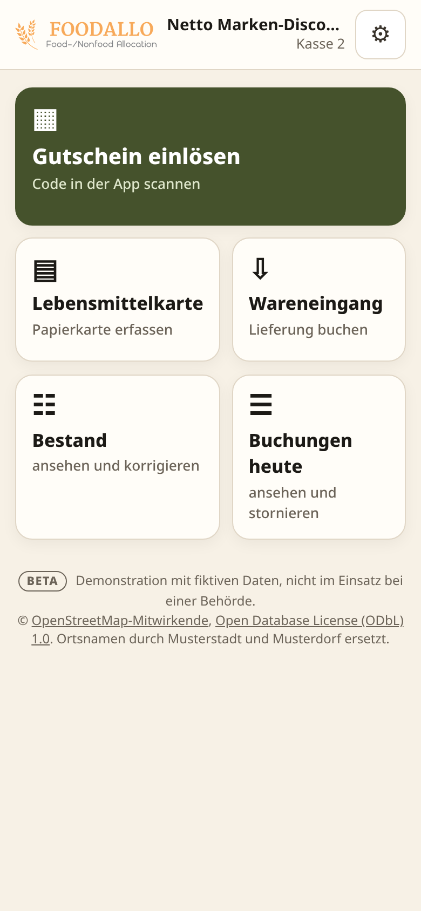
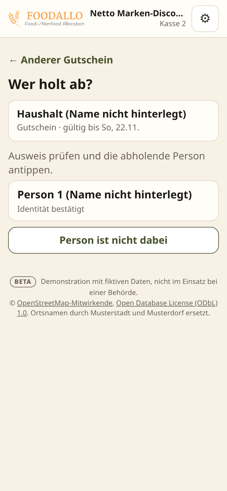
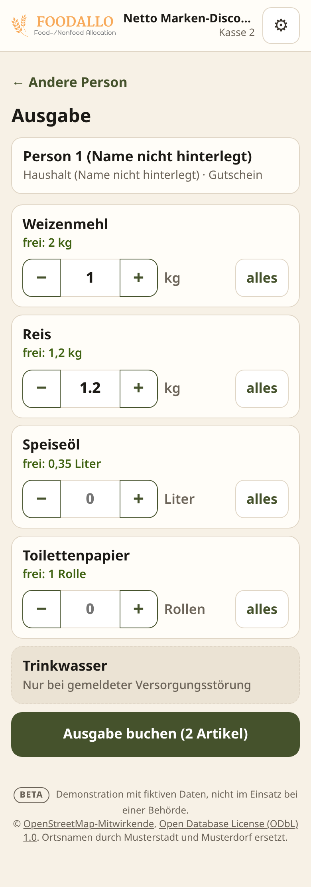
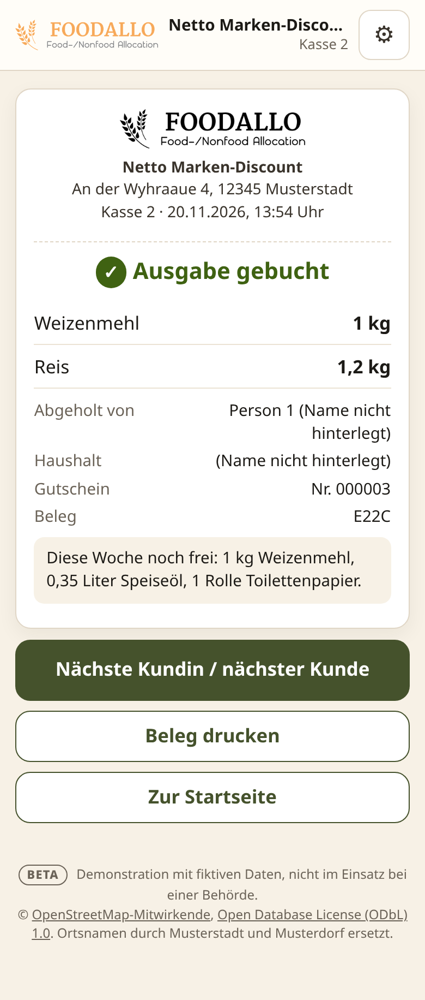
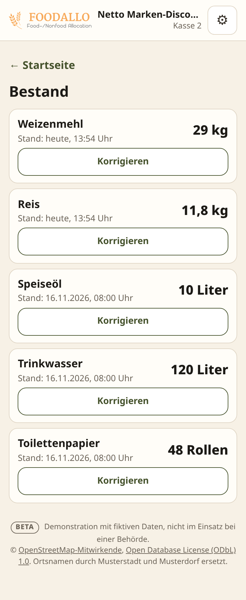

Retail App · für Geschäfte und Apotheken
Ausgeben und Bestand melden – an der Kasse.
Die Retail App bucht jede Ausgabe gegen den Gutschein oder die Papierkarte und gegen den Bestand des Geschäfts. Mehr als die freie Menge lässt sich nicht ausgeben. Eine Aufgabe je Bildschirm, große Schaltflächen für das Handy.
Demonstration mit fiktiven Daten, nicht im Einsatz bei einer Behörde
So funktioniert es
- Schicht beginnen – Ausgabestelle und Kasse wählen.
- Gutschein oder Karte erfassen – Code aus der Customer App scannen oder die Nummer der Papier-Lebensmittelkarte eingeben.
- Wer holt ab? – Ausweis prüfen und die abholende Person wählen. Nicht bestätigte Personen werden abgewiesen.
- Ausgabe – je Artikel steht, wie viel noch frei ist – begrenzt durch Gutscheinrest und Bestand. Alles wird gemeinsam gebucht.
- Beleg – mit Artikeln, Mengen und dem, was in dieser Woche noch offen ist; drucken möglich.
- Bestand – Wareneingänge mit Lieferschein buchen, Bestand zählen und korrigieren, Buchungen des Tages einsehen und stornieren.
- Apotheke – Insulin nur gegen gültigen Rezeptnachweis und geprüften Ausweis.
Beta ausprobieren
Testzugang in der App unter Testbetrieb (Einstellungen → „Testbetrieb“ → „Testdaten laden“).
Die Beta speichert nur im eigenen Browser.
Bildschirme aus der Beta





Die GrundregelZugeteilt wird das Kleinste aus Bedarf, Grundquote und Restbestand.